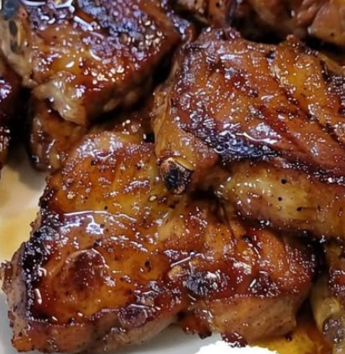

Brown Sugar Pork Chops
Sweet heat pork chops.

Ingredients
- 1/4 C Dark Brown Sugar
- 1/2 tsp Garlic Powder
- 1/2 tsp Paprika
- 1/2 tsp Cayenne Pepper
- 1/2 tsp salt and pepper
Instructions
- Combine ingredients and mix well.
- Coat pork chops in seasoning mix.
- Let sit in seasoning for 12+ hours.
- Grill pork chops to desired temperature.
Chef's Notes
Tasty, but be sure to add all the cayenne for a nice heat.